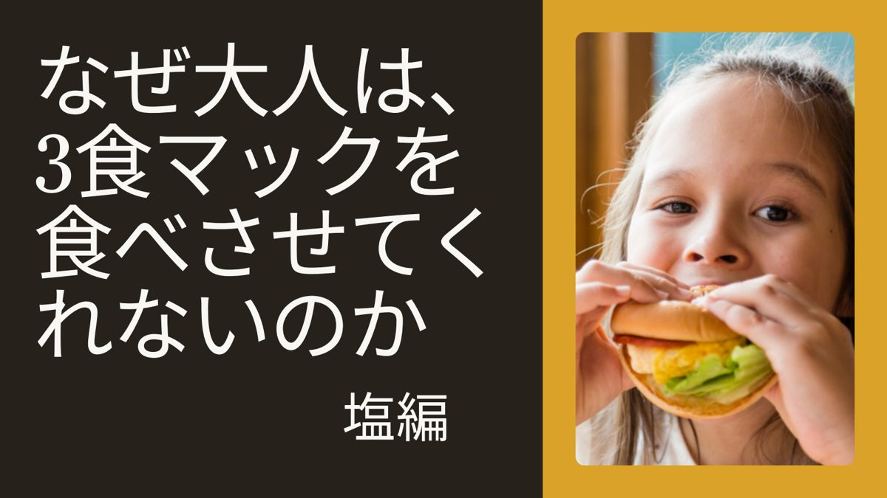

Salt & Health Lesson for Kids
30-minute online lesson · mixed grades (elementary & junior high)
Built around a question kids really ask: “Why won’t adults let me eat fast food three times a day?”
- Students pick their dream fast-food dinner and add up the salt in a web tool.
- They compare it with the daily target for their own age group.
- A 30-second animation shows how extra salt affects blood vessels.
- The lesson ends with “helper foods” to add, not foods to give up.